flowchart LR gg[ggplot2] --> ggp[ggplotly] pl[plotly] sh[Spike Histograms] --- sc[Scatterplots] --- dc[Dot Charts] --- eb[Extended<br>Box Plots] sp[Frequency Scatterplots for Large Datasets] sp --> gghex[ggplot2 Hexagonal Binning] sp --> hs[Hmisc::ggfreqScatter] md[Annotating Plots With<br>Labels and Units<br>From Metadata]
14 Graphics
Cleveland’s The Elements of Graphing Data and Graphics in Scientific Publications are two of the best sources of how-to information on making scientific graphs. Much information may be found at hbiostat.org/bbr/descript.html and hbiostat.org/R/hreport especially these notes: hbiostat.org/doc/graphscourse.pdf. John Rauser has an exceptional video about principles of good graphics. Rafael Irizarry has an excellent chapter on graphics principles and recommendations. See datamethods.org/t/journal-graphics for graphical methods for journal articles. Also see Saloni Dattani’s [excellenet article on data visualization]{https://www.scientificdiscovery.dev/p/salonis-guide-to-data-visualization).
Paul Murrell has an excellent summary of recommendations:
- Display data values using position or length.
- Use horizontal lengths in preference to vertical lengths.
- Watch your data–ink ratio.
- Think very carefully before using color to represent data values.
- Do not use areas to represent data values.
- Please do not use angles or slopes to represent data values. Please, please do not use volumes to represent data values.
On the fifth point above, avoid the use of bars when representing a single number. Bar widths contain no information and get in the way of important information. This is addressed below.
R has superior graphics implemented in multiple models, including
- Base graphics such as
plot(), hist(), lines(), points()which give the user maximum control and are best used when not stratifying by additional variables other than the ones being summarized - The
latticepackage which is fast but not quite as good asggplot2when one needs to vary more than one of color, symbol, size, or line type due to having more than one categorizing variable.ggplot2is now largely used in place oflattice. - The
ggplot2package which is very flexible and has the nicest defaults especially for constructing keys (legends/guides) - For semi-interactive graphics inserted into html reports, the
Rplotlypackage, which uses theplotlysystem (which uses the JavascriptD3library) is extremely powerful. See plot.ly/r/getting-started. - Fully interactive graphics can be built using
RShinybut this requires a server to be running while the graph is viewed.
For ggplot2, www.cookbook-r.com/Graphs contains a nice cookbook. See also learnr.wordpress.com. To get excellent documentation with examples for any ggplot2 function, google ggplot2 _functionname_. ggplot2 graphs can be converted into plotly graphics using the ggplotly function. But you will have more control using R plotly directly.
The older non-interactive graphics models which are useful for producing printed and pdf output are starting to be superseded with interactive graphics. One of the biggest advantages of the latter is the ability to present the most important graphic information front-and-center but to allow the user to easily hover the mouse over areas in the graphic to see tabular details.
I make heavy use of ggplot2, plotly and R base graphics. plotly is used for interactive graphics, and the R plotly package provides an amazing function ggplotly to convert a static ggplot2 graphics object to an interactive plotly one. If the user goes to the trouble of adding labels for graphics entities (usually points, lines, curves, rectangles, and circles) those labels can become hover text in plotly without disturbing anything in static graphics. As shown here you can sense whether an html or pdf report is being produced, and for html all ggplot2 objects can be automatically transformed to plotly.
With
ggplotly extra text appears in front of labels, but the result of ggplotly can be run through Hmisc::ggplotlyr to remove this as shown in the example.Many types of graphs can be created with base graphics, e.g. hist(age, nclass=50) or Ecdf(age) but using ggplot2 for even simple graphics makes it easy to add handle multiple groups on one graph or to create multiple panels for strata using faceting. ggplot2 has excellent default font sizes and axis labeling that works for most sizes of plots.
14.1 Recommended Graphics by Data Types
Let Y be the dependent (response) variable, also called the analysis variable, to display, and X denote an independent or descriptor variable.
For micrographics such as those appearing in table cells see Section 4.10
14.1.1 Y Discrete
X Absent or Categorical
Compute proportions of Y categories and display using a dot chart invented by Bill Cleveland. Many examples are visible here. See R examples in Chapter 9 and here.
Dot charts can be produced using ggplot2 or a variety of Hmisc package functions.
X Continuous
Use nonparametric smoothers or moving proportions exemplified in Chapter 15.
14.1.2 Y Continuous
X Absent or Categorical
- Spike histograms (Chapter 9)
- Extended box plots (Section 15.2)
- Empirical cumulative distribution functions
Bivariate With Continuous X
- Scatterplot
- Scatterplots for large datasets using color or gray scale to encode frequencies (Figure 14.3 and here) or here.
14.2 R Graphics Devices
R has a wide variety of graphics devices. When creating reports with knitr, RMarkdown and Quarto the default graphics format for static graphics is png, using the png function in the grDevices package built-in to R. The ragg package has a function that is faster, produces better quality graphics, and allows you to use all system fonts: the ragg_png function. As explained in the ragg link you can set this as the default function in RStudio by selecting a backend of AGG under Graphics Device which is in the General menu under Tools ... Global Options.
A nice article about devices is by Colin Gillespie which contains the function defined below (a typo was fixed).
To make ragg_png be used everywhere you can create a replacement for the png function in your .Rprofile file in your home directory. Or if you want to use the better define just for your reports you can add this statement to the top of the script.
ragg_png was not invoked here as it caused some problems for some ggplot2 themes/font families.raggpng <- function(..., res=192) ragg::agg_png(..., res=res, units='in')
knitr::opts_chunk$set(dev='raggpng', fig.ext='png')An easier way to make Quarto/knitr use agg_png throughout is to include the following in your yaml prologue at a leftmost level:
You can see all the graphics devices available in
knitr with names(knitr:::auto_exts)knitr:
opts_chunk:
dev: "ragg_png"When using raggpng you may want to change the font for text in ggplot2 graphics as shown below.
14.3 ggplot2
ggplot2 has a huge number of modifiable options and many themes. The examples below demonstrate how to set text font and themes for all subsequent graphs, and an example of each theme. As documented here the chunk uses #| layout-ncol: 2 to create a matrix of plots.
require(Hmisc)
require(data.table)
require(qreport)
require(ggplot2)
set.seed(1)
x <- 1:50
label(x) <- 'Acceleration'
units(x) <- 'm/s^2'
y <- x + (x / 3) ^2 + rnorm(50, 0, 20)
label(y) <- 'Y'
units(y) <- 'm^2/kg^3'
z <- sample(LETTERS[1:3], 50, TRUE)
g <- ggplot(mapping=aes(x, y, color=z)) + geom_point() + hlabs(x, y) +
theme(legend.position='none')
g + labs(title='default')
theme_set(theme_bw() +
theme(text=element_text(family='arial', face='italic', size=20)))
g + labs(title='bw arial italic large',
subtitle='italic does not apply to labels in expression()')
theme_set(theme_classic(base_family='helvetica'))
g + labs(title='classic helvetica')
theme_set(theme_gray(base_family='courier'))
g + labs(title='gray courier')
theme_set(theme_minimal())
g + labs(title='minimal')
theme_set(theme_light())
g + labs(title='light')
theme_set(theme_dark(base_family='URW Chancery L'))
g + labs(title='dark chancery')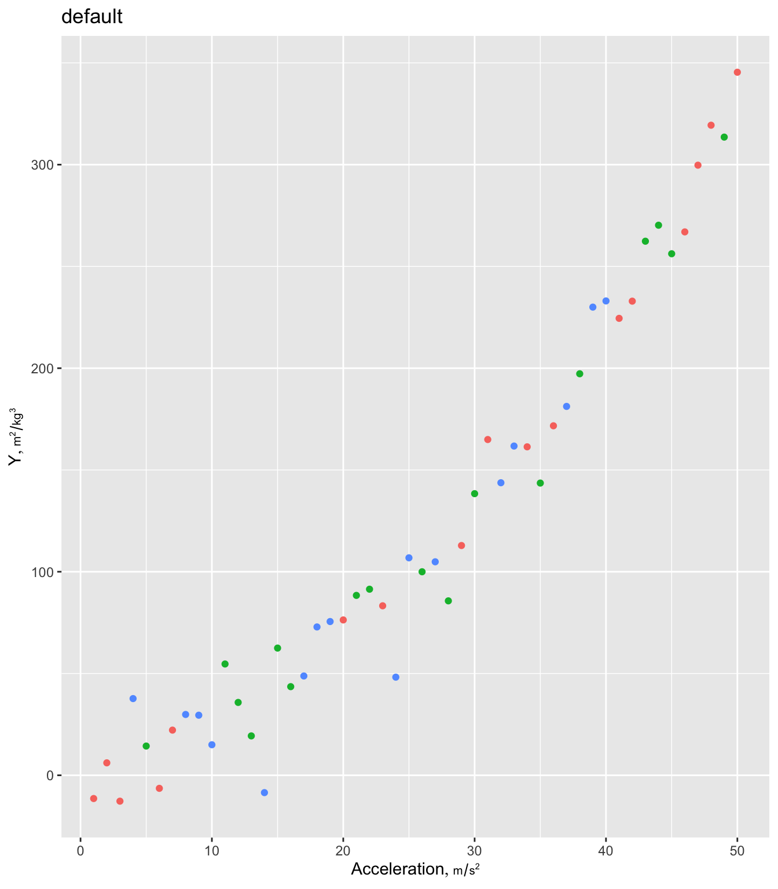
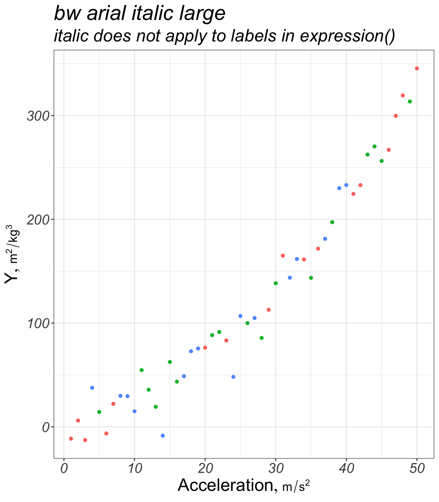
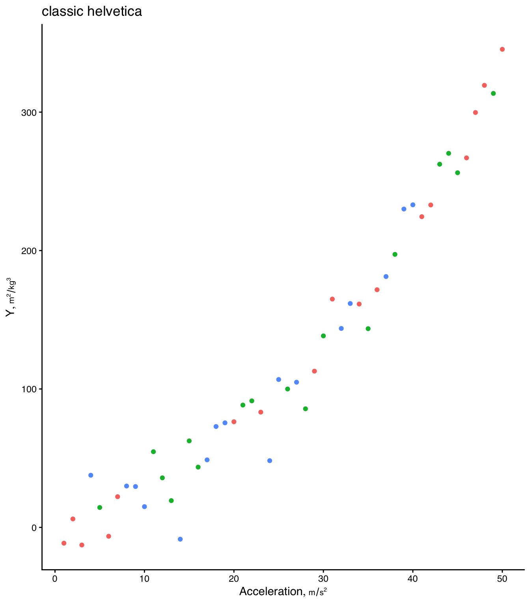
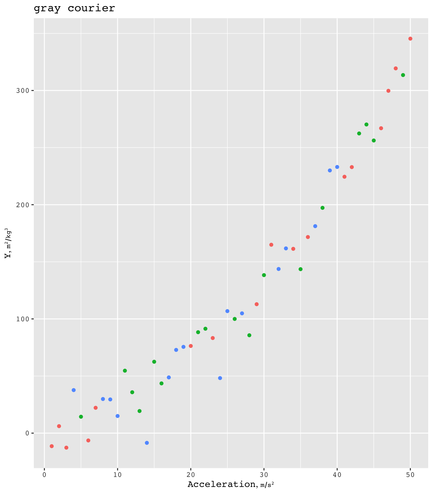
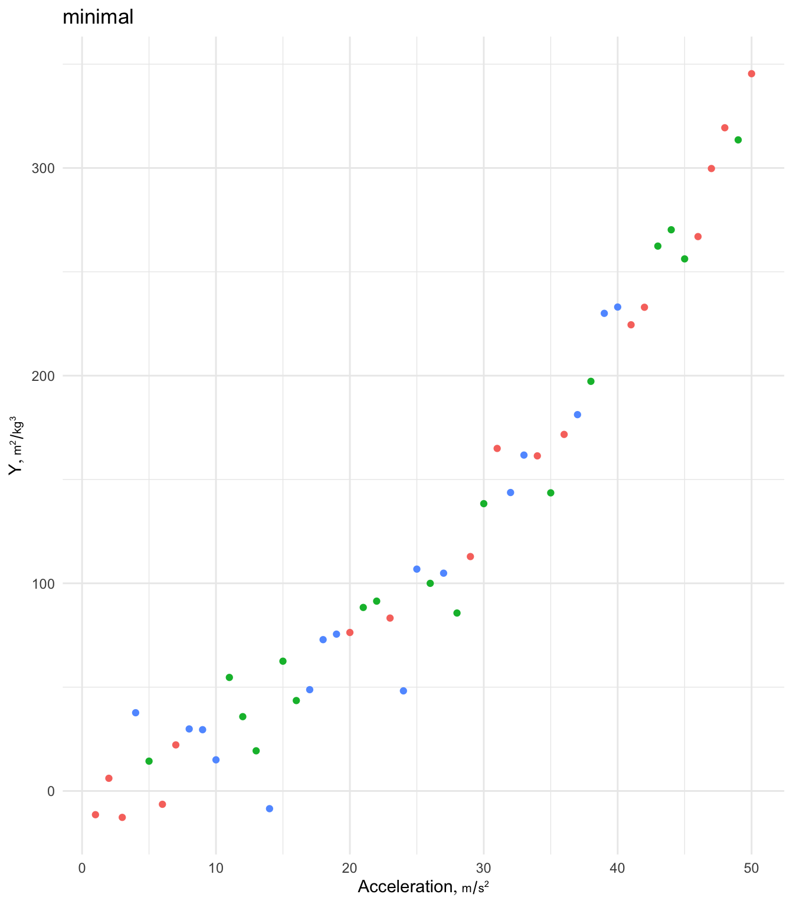
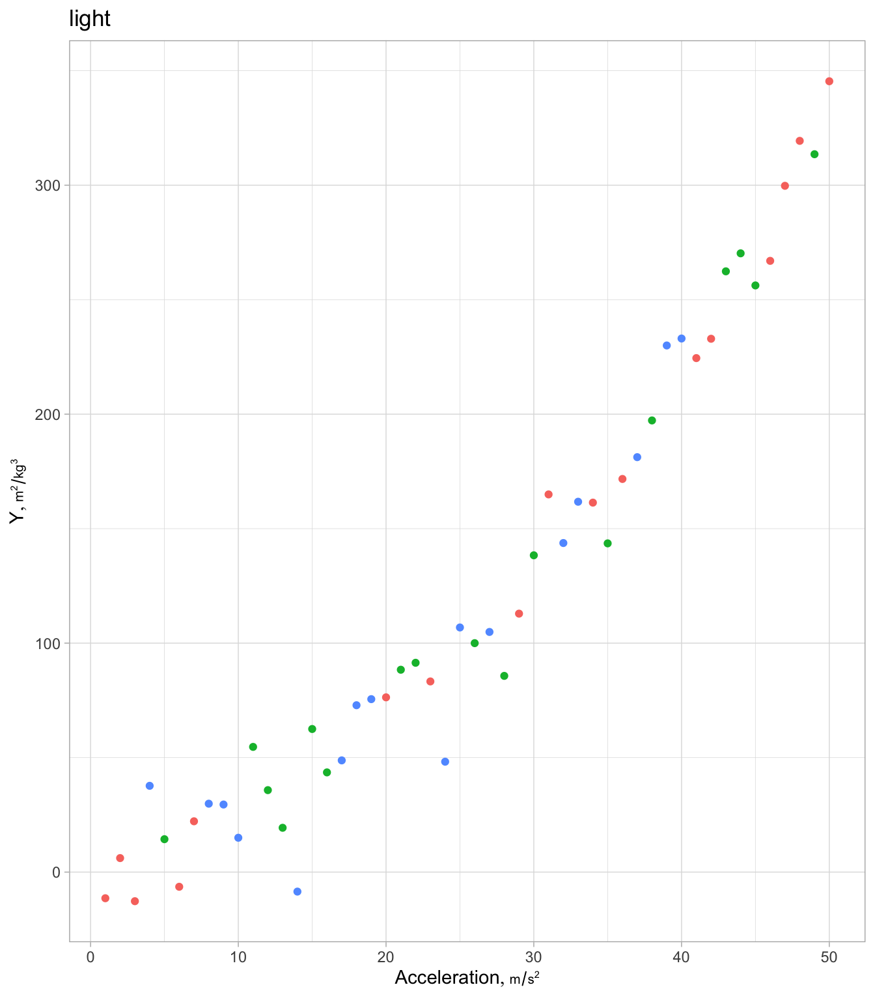
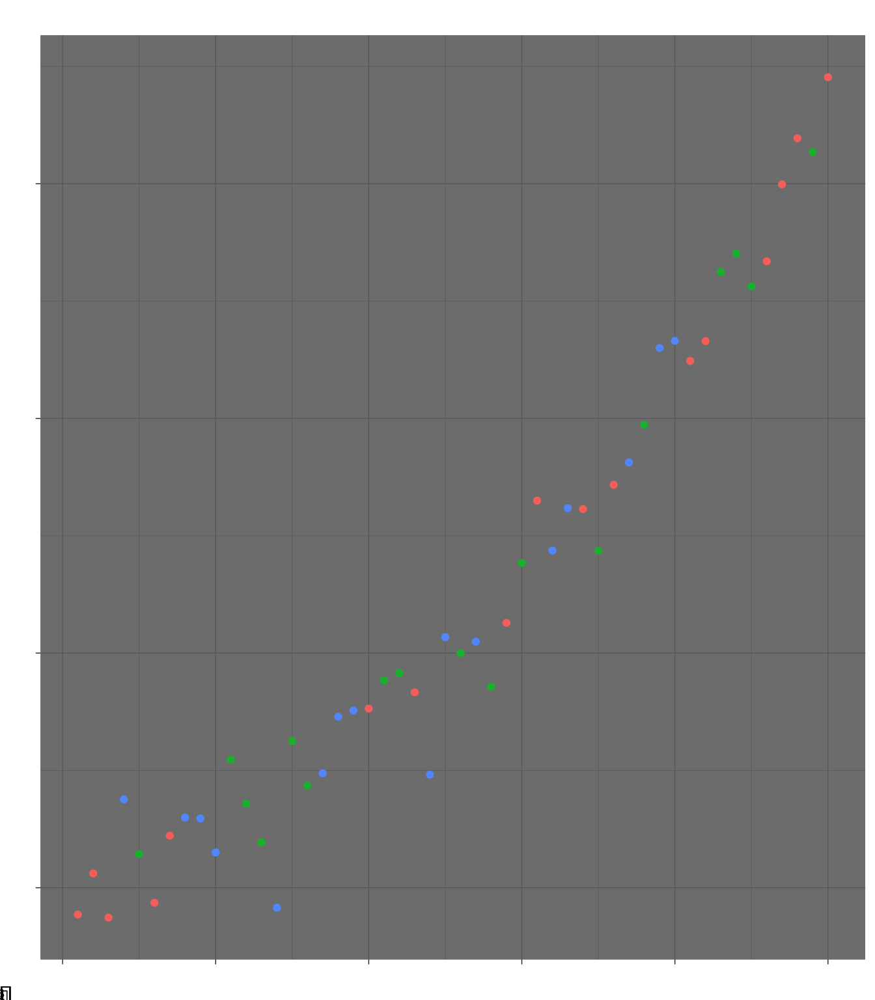
Make it easier to use a specific color palette throughout a report use the following example modified from this.
th <- list(theme_gray(base_family='arial'),
scale_color_viridis_d(), scale_fill_viridis_d())
g + th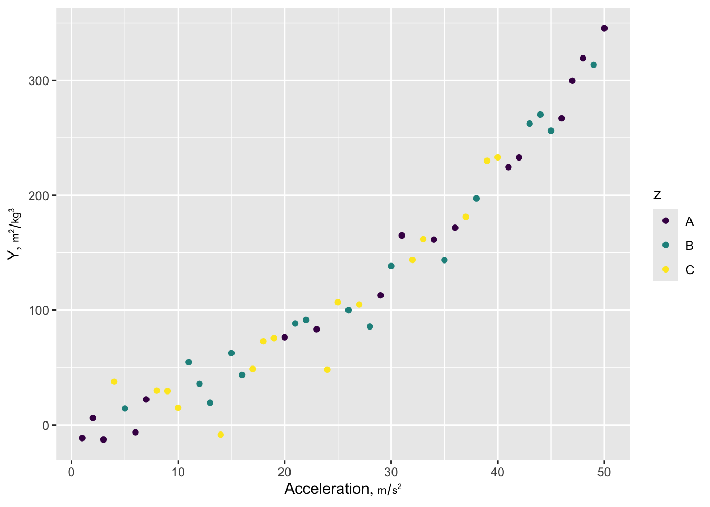
Here is a prototypical ggplot2 example illustrating many of the features I most often use. Ignore the ggplot2 label attribute if not using plotly. The Hmisc hlabs function is used to make it easy to retrieve variable labels/units formatted for plotting (units is in a smaller font than the main label). labs, like the hlab and vlab functions in Hmisc looks for the current working dataset to be called d unless you use options(current_ds='some other dataset name') or use the Hmisc extractlabs function.
ishtml <- knitr::is_html_output()
hookaddcap() # make knitr call a function at the end of each chunk
# to try to automatically add to list of figure
theme_set(theme_gray(base_family='arial', base_size=13)) # may be desired if using raggpngIn the following we convert a ggplot object to a plotly interactive graphic. plotly uses html in labels so we have to specify the html=TRUE option to Hmisc::hlabs.
getHdata(stressEcho)
d <- stressEcho
setDT(d)
g <-
ggplot(d, aes(x=age, y=bhr, color=gender, label=paste0('dose:', dose))) +
geom_point() + geom_smooth() +
scale_x_continuous(minor_breaks=seq(30, 80, by=5)) + # minor tick marks
guides(color=guide_legend(title='')) +
theme(legend.position='bottom') + # not respected by ggplotly
labs(caption='Scatterplot of age by basal heart rate stratified by sex') +
hlabs(age, bhr, html=TRUE)
# or xlab(hlab(age, html=TRUE)) + ylab(hlab(bhr, html=TRUE))
# or just xlab('Age in years') + ylab('Basal heart rate')
# To put the caption in a different font or size use e.g.
# theme(plot.caption=element_text(family='mono', size=7))
# Likewise for the legend
# theme(legend.text=element_text(family='mono', size=9))
ggplotlyr(g, remove='.*): ') # removes paste0("dose:", dose): plotly translation of a ggplot2 graph making use of variable labels from a data table that are translated to use within-string html font changes
# dose is in hover text for each pointggplot2 allows one to flexibly use transformed axes. Here is example syntax to plot the \(x\) variable on a log scale, taking charge of tick mark placement and adding minor divisions depicted with grid lines.
ggplot2(d, aes(x, y)) + geom_point() +
scale_x_continuous(trans='log10',
breaks=c(5, seq(10, 100, by=10)),
minor_breaks=seq(5, 100, by=5))Here’s a nice way to render axis tick marks and labels for log scales using the scales package.
set.seed(1)
x <- rnorm(100)
y <- 1000 * exp(x + rnorm(100)/10)
# Sometimes add scale_y_log10(breaks=scales::breaks_log(n=...))
ggplot(mapping=aes(x, y)) + geom_point() +
scale_y_log10(labels=scales::label_comma(),
guide='axis_logticks')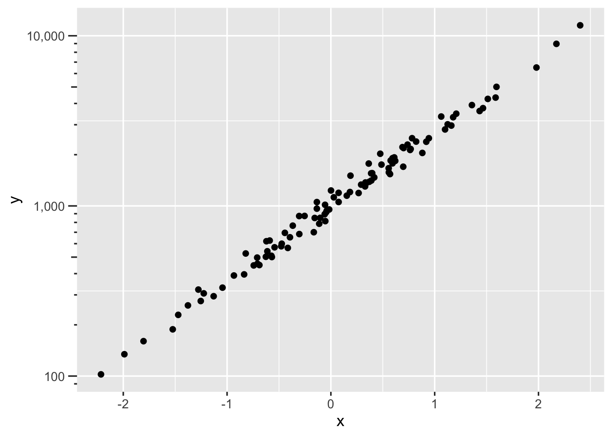
ggplot2 can create a wide variety of statistical graphics. Here is an example creating stratified empirical cumulative distribution functions.
getHdata(diabetes)
ggplot(subset(diabetes, ! is.na(frame)),
aes(x=log(glyhb), color=frame)) + stat_ecdf(geom='step')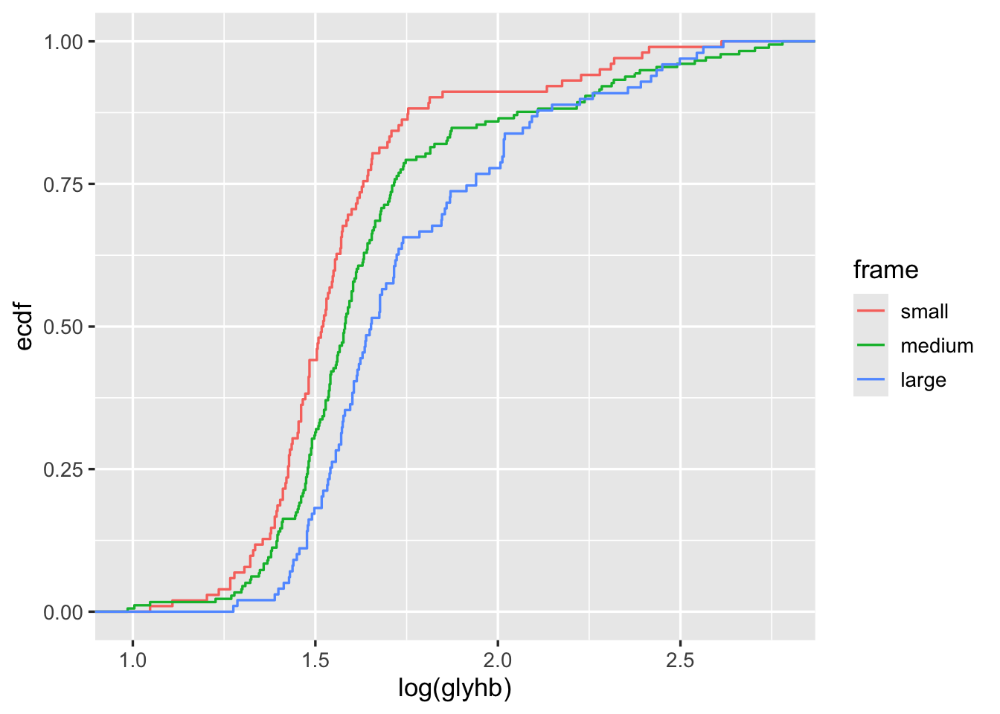
ggplot2
Section 9.1.1 has ggplot2 examples for producing spike histograms and for making ECDFs a different way.
Note
ggplot2 Tricks
14.4 Formatting Columns in Legends
If the text for the legend contains columns that you want to have lined up, build the columns so that they are of equal length and use mono font, e.g.
pad <- function(x, n) # pad x to n characters
substring(paste(x, ' '), 1, n)
d$z <- paste(pad(a), b)
ggplot(d, aes(x, y, color=z)) + geom_line() +
theme(legend.text = element_text(family='mono'))14.5 Controlling Legend Placement
See this excellent tutorial.
14.6 Plot Annotation
- See this by Mine Çetinkaya-Rundel. Note that when annotating a facet or a whole plot, when the annotation does not use an aesthetic (such as colors to represent different curves on one facet), make sure that aesthetic does not appear in
ggplot()but rather only in thegeoms, e.g.geom_line(aes(col=region)). See Section 13.5 for an example.
14.7 Separating Points Without Labeling Groups
Sometimes you need to start a new curve when moving to a new group of points, but without labeling all the groups. In this example curves respresenting lower confidence limits, upper confidence limits, and point estimates are separated. paste() is used to create unique groups to pass to the group ggplot2 aesthetic. The code for that example also shows how it is easier to use ggplot2 when complex data objects are melted into a single data frame.
14.8 Creating Graphs in a Loop With Conditions in a Caption or Tabs
Sometimes we create a series of ggplot2 graphs in a for loop, by cycling through a set of parameter settings. Each graph must be print()ed to render. We can use a caption or subtitle to label each graph. The example below shows how to use math notation in a caption, where we list the current value of \(\delta\). To mix math expressions and variable values we use the bquote function.
for(del in c(0, 0.2, 0.4)) {
g <- ggplot(subset(d, delta==del), aes(x, y)) + geom_line() +
labs(caption=bquote(delta == .(del)))
print(g) # graphs made inside loops don't show unless you print()
}It may be better to put the series of plots in tabs. results='asis' must be placed in the chunk header for maketabs to work. Use an html δ inside tab labels.
dels <- c(0, 0.2, 0.4)
g <- vector('list', length(dels))
names(g) <- paste0('δ=', dels)
for(del in dels)
g[[paste0('δ=', del)]] <- ggplot(subset(d, delta==del), aes(x, y)) + geom_line()
maketabs(g, initblank=TRUE)14.9 Multiple ECDF Transformations and Math Notation in Facet Labels
The ECDF example above used the plain ECDF without transforming it. We often check statistical assumptions by transforming the ECDF. To do that we need to take control of the computation of the ECDF step function coordinates. The following example does that, and also makes use of the R plotmath notation, which allows the use of greek letters, math formulas, and special fonts. The ggplot2 labeller capability was used to convert character strings containing plotmath expressions to actual expresssions for special rendering.
The Hmisc ecdfSteps function uses the built-in R ecdf function to efficiently compute ECDF coordinates, with possible widening of the x-range to better show the steps at y=0 and 1.
Obtain ECDFs separately by the stratification factor body frame in the diabetes dataset. Then duplicate the ECDFs so that we can transform them two different ways.
getHdata(diabetes)
d <- subset(diabetes, ! is.na(frame))
setDT(d) # make it a data table
w <- d[, ecdfSteps(glyhb, extend=c(2.6, 16.2)), by=frame]
# Duplicate ECDF points for trying 2 transformations
u <- rbind(data.table(trans='paste(Phi^-1, (F[n](x)))', w[, z := qnorm(y) ]),
data.table(trans='logit(F[n](x))', w[, z := qlogis(y)]))Let’s label the facets with the mathematical notation corresponding to these two inverse CDFs we transformed the ECDFs by. ggplot2 has a neat way to facet on a character string that represents R plotmath notation, where the label_parsed directive translates the character strings to expressions at the last second. See this article for more on formatting math symbols in ggplot2.
# Allow the y-axis scale to vary ('free_y'); geom_step makes step functions
g <- ggplot(u, aes(x, z, color=frame)) + geom_step() +
facet_wrap(~ trans, label='label_parsed', scales='free_y')
g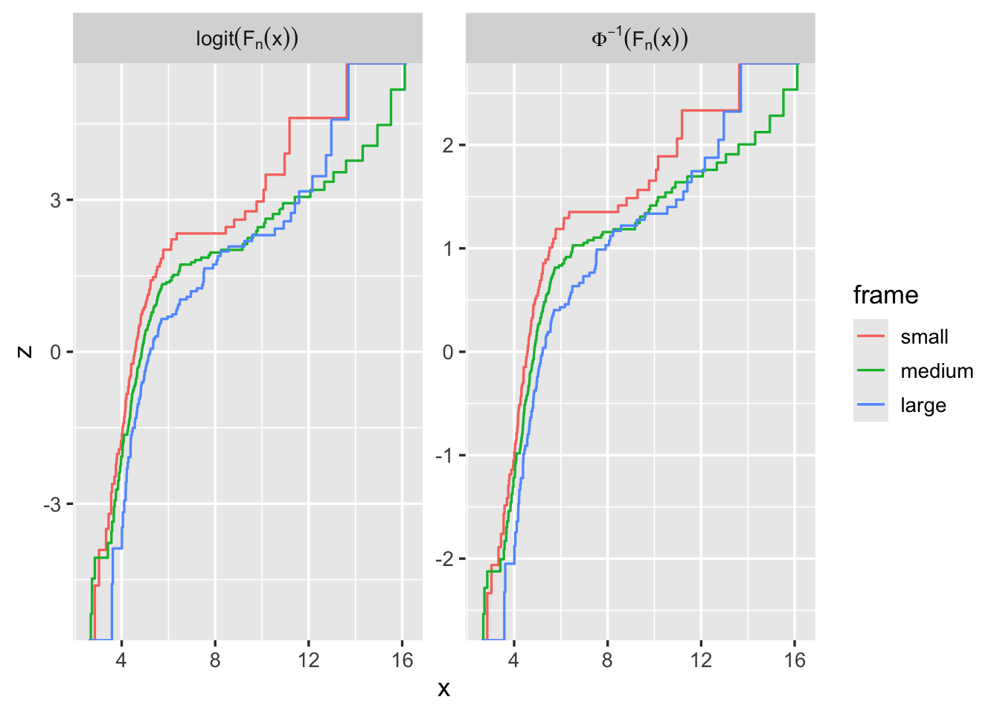
14.10 Color Scales, Palettes and Themes
Example of ggthemr:
if(! require(ggthemr)) {
devtools::install_github('Mikata-Project/ggthemr')
require(ggthemr)
}isoband (0.2.7 -> 0.3.0) [CRAN]
The downloaded binary packages are in
/var/folders/37/07w41r3d531460qmpql58l0m0000gn/T//RtmpWj1a9G/downloaded_packages
── R CMD build ─────────────────────────────────────────────────────────────────
* checking for file ‘/private/var/folders/37/07w41r3d531460qmpql58l0m0000gn/T/RtmpWj1a9G/remotes1110f37d8998d/Mikata-Project-ggthemr-f04aca6/DESCRIPTION’ ... OK
* preparing ‘ggthemr’:
* checking DESCRIPTION meta-information ... OK
* checking for LF line-endings in source and make files and shell scripts
* checking for empty or unneeded directories
Removed empty directory ‘ggthemr/README_files’
Omitted ‘LazyData’ from DESCRIPTION
* building ‘ggthemr_1.1.0.tar.gz’ggthemr('dust', layout='scientific')
g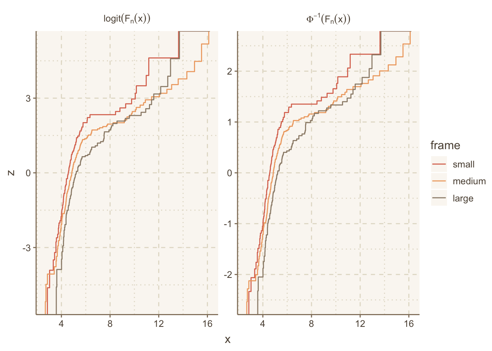
g + theme(panel.grid.major=element_line(linetype='dotted'))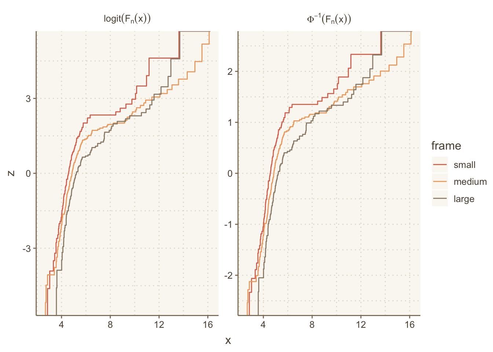
14.11 Adding Hover Text to Show Details
The ggiraph package allows you to make certain elements of ggplot2 graphics interactive. This example shows how to use ggiraph to add a tooltip to facet labels.
14.12 Two Independent Panels
See Section 9.5 for a more advanced ggplot2 example where the patchworks package assists in the construction of a two-panel plot. The left panel shows group means or proportions and the right panel shows confidence intervals for differences in these.
For large datasets you can use hexagonal binning with ggplot2 or use the Hmisc package ggfreqScatter function. Both approaches make it easy to see overlapping points by color coding the frequency of points in each small bin, allowing scatterplots to scale to very large datasets. Here is an example using ggfreqScatter:
html=TRUE was needed because otherwise axis labels are formatted using R’s plotmath and plotly doesn’t like that.set.seed(1)
x <- round(rnorm(2000), 1)
y <- 2 * (x > 1.5) + round(rnorm(2000), 1)
z <- sample(c('a', 'b'), 2000, replace=TRUE)
label(x) <- 'X Variable' # could use xlab() &
label(y) <- 'Y Variable' # ylab() in ggfreqScatter()
g <- ggfreqScatter(x, y, by=z, html=ishtml)
# If variables were inside a data table use
# g <- d[, ggfreqScatter(x, y, by=z, html=ishtml)]
g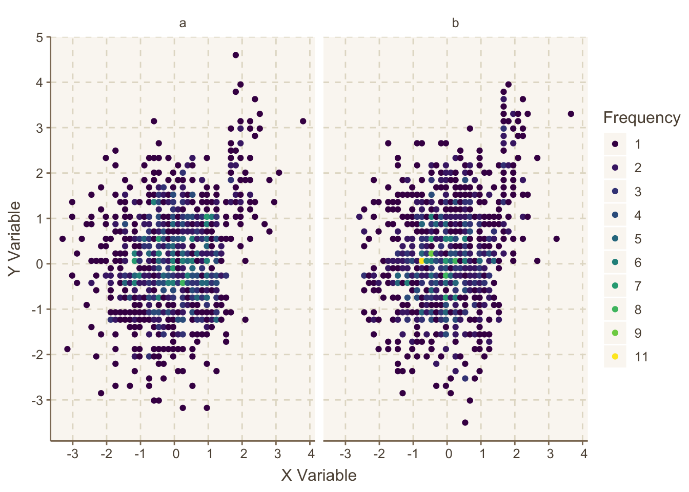
ggfreqScatter example, making use of color coded frequencies of points that will work for any size dataset and any number of coincident points
Now convert the graphic to plotly if html is in effect otherwise stay with ggplot2 output.
ggplotlyr(g)plotly version of Figure 14.3
When you hover the mouse over a point, its frequency pops up.
Many functions in the Hmisc and rms packages produce plotly graphics directly. These two package’s functions using plotly try to compute optimal figure heights and widths, but it is usually better to let plotly auto-size the plots. Putting options(plotlyauto=TRUE) will override these dimensions and force plotly to auto-size. Putting this command in your .Rprofile file in the home directory makes this easy.
One of the most unique pure
plotly functions in Hmisc is dotchartpl.An alternative to ggfreqScatter and hexagonal binning is the ggplot2 2-d binning function geom_bin2d. It bins the data to create small rectangles, and these are color coded to depict bin frequencies. Here is an example.
Courtesy of Vito Zanotelli
ggplot(mapping=aes(x,y)) +
geom_bin2d(bins=150) +
viridis::scale_fill_viridis(trans = "log10", option='inferno') +
hlabs(x, y)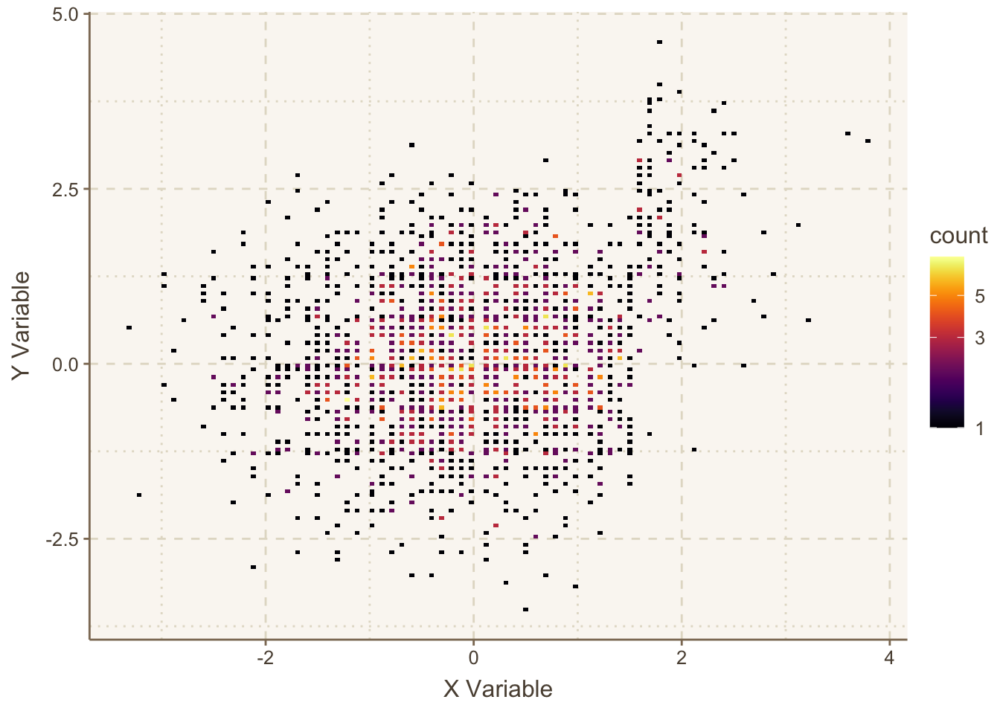
geom_bin2d
Let’s repeat the graph using hexagonal binning, which allows user control over how the bin frequencies are categorized.
ggplot(mapping=aes(x,y)) +
stat_binhex(aes(fill=cut2(..count.., c(1:5, 10))), bins=75) +
guides(fill=guide_legend(title='Frequency')) +
hlabs(x, y)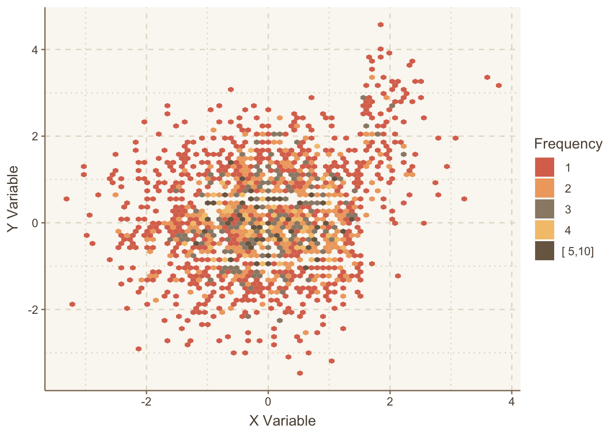
14.12.1 Maximal Number of Variables With ggplot2
For ordinary plots such as line and scatter plots, ggplot2 can utilize the following graphics characteristics:
- for continuous variables: \(x\)-axis, \(y\)-axis, color spectrum, saturation (alpha) / gray scale darkness, line thickness
- for categorical variables: point symbol, horizontal facet, vertical facet, line thickness, line type
Line type is not allowed to be non-solid when color, line width, or alpha are varying. Line width is not very effective when there is more than one curve in a panel.
The following line plot has a continuous variable x as the primary “mover”, and uses the following characteristics to encode other numeric variables that are evaluated only on discrete grids of values.
k: color, with superpositioning within each panel; multiplier ofxwithin \(\sin(x)\)shift: vertical facet; constant \(c\) in \(\sin(x + c)\)cos: horizontal facet: multiplier of an additional \(\cos(x)\) terma: line type: overall multiplier
d <- expand.grid(x = seq(0, 2 * pi, length=150),
k = c(.8, .9, 1, 1.1, 1.2),
shift = c(-0.5, 0, 0.5),
cos = c(-0.3, 0, 0.3),
a = c(0.6, 1, 1.6))
d <- transform(d, y = a * (sin(k * x + shift) + cos * cos(x)))
ggplot(d, aes(x, y, color=factor(k), linetype=factor(a))) +
geom_line() + facet_grid(shift ~ cos) +
guides(color = guide_legend(title='k'),
linetype = guide_legend(title='a'))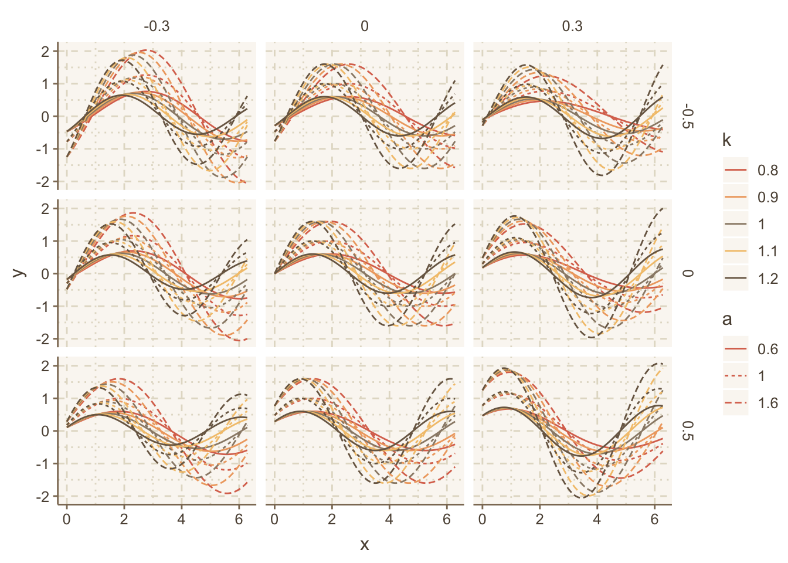